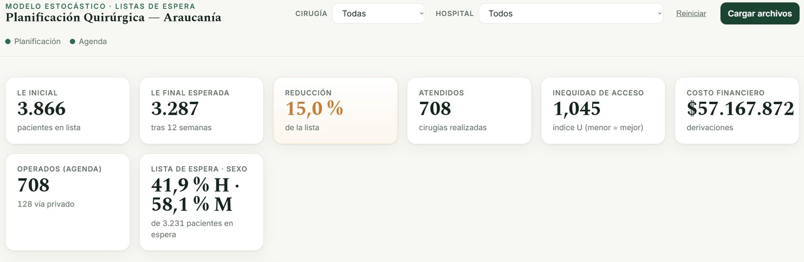
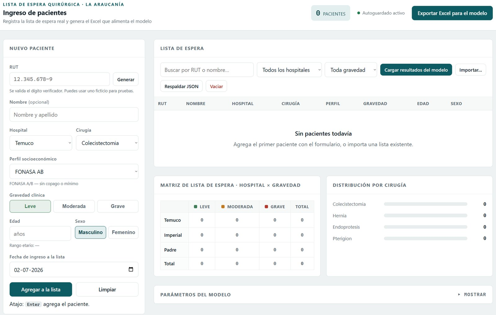

En la red pública de La Araucanía, casi 4.000 personas esperaban una cirugía en solo cuatro especialidades. Desarrollé un modelo de optimización estocástica que planifica semana a semana las cirugías de tres hospitales públicos y decide qué pacientes conviene derivar a una clínica privada, con un objetivo claro: reducir la espera dando prioridad a quienes más lo necesitan, sin dejar a ningún grupo atrás.
Los pabellones son limitados, derivar pacientes a clínicas privadas cuesta dinero y no todos los casos son igual de urgentes. Si simplemente se atiende por orden de llegada, un caso grave puede esperar lo mismo que uno leve, y los pacientes más vulnerables pueden quedar postergados.
¿Cómo operar a más personas, usando bien los recursos y de forma justa?
Construí un modelo de optimización estocástica: un programa que evalúa miles de combinaciones posibles y elige el mejor plan de cirugías. Para cuatro tipos de cirugía y tres hospitales, el modelo busca equilibrar tres metas al mismo tiempo:
Usar el presupuesto de derivación y las horas extra solo donde más rinden.
Dar prioridad a los casos más graves y a los pacientes más vulnerables.
Que ningún grupo de pacientes quede sistemáticamente atrás.
Es estocástico porque considera la incertidumbre: la demanda, las inasistencias y la duración de las cirugías cambian, así que el plan se pone a prueba en un escenario pesimista, uno normal y uno optimista, para que funcione en cualquiera de ellos.
En 12 semanas, el plan permite realizar 708 cirugías y reducir la lista de espera en un 15 %, respetando el presupuesto y sin dejar atrás a ningún grupo de pacientes.
Las cirugías más cortas, como el pterigión, avanzan mucho más rápido; las más largas, como la prótesis de rodilla, son el principal cuello de botella.
También comparé más de 100 planes con distintas prioridades. Una conclusión clave: si el plan no considera la equidad, la desigualdad entre grupos se duplica; al incluirla, se mantiene controlada sin sacrificar casi nada de la reducción de la espera.
Este proyecto muestra lo que se puede lograr cuando los datos se convierten en decisiones. Y aquí la inteligencia artificial tiene un enorme potencial: combinada con modelos de optimización como este, puede ayudar a resolver un sinfín de problemas y a optimizar procesos en casi cualquier área.
El aprendizaje automático puede pronosticar la demanda, las inasistencias o la duración de las cirugías.
Modelos como este convierten esos pronósticos en el mejor plan posible.
El plan se actualiza a medida que llegan nuevos datos, semana a semana.
El mismo enfoque sirve en hospitales, logística, producción y cadenas de suministro: en cualquier lugar donde los recursos son limitados y las decisiones importan, la IA y la optimización pueden hacer los procesos más rápidos, eficientes y justos.
Desarrollé el proyecto completo, desde la idea hasta herramientas listas para usarse:
Para que el modelo pueda usarse en el día a día, lo acompañé de dos herramientas: una aplicación para registrar a los pacientes en espera y un panel que muestra la planificación y sus resultados.

